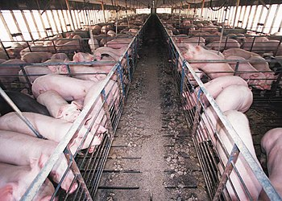

Свиноводство
Свиноводство — отрасль животноводства, занимающаяся разведением домашних свиней. Получило наибольшее распространение в Восточной Азии (Китай 49,8 % мирового производства), Европе (25,6 % мирового производства), Америке (10,3 % мирового производства). Это направление животноводства отличается высокой требовательностью, высокой продуктивностью, высокой энергетической ценностью произведённой продукции и короткими сроками производства поголовья на убой. Развивается в районах с любыми климатическими условиями. Важнейшие ареалы свиноводства тяготеют к густонаселённым районам и промышленным центрам, к местам выращивания и переработки зерна, к предприятиям пищевой промышленности.
Свиноводческий комплекс
История свиноводства
Люди стали заниматься разведением свиней в период первобытнообщинного строя. В 6-5 тысячелетии до н.э. свиноводство появляется у народов восточного Китая (Хоули, Хэмуду). В 3-м тысячелетии до н. э. родовые племена, жившие на территории бассейнов р. Днепра, Южного Буга и Днестра (трипольская культура), разводили свиней для получения мяса и сала; в развитых рабовладельческих государствах (Египте, Греции, Индии) разводили породы свиней. Известно свиноводство было в эпоху Бронзового века и в Юго-Восточной Азии (Фунгнгуен, 2 тыс. до н.э.). В конце XVI века Флетчер заметил, что «русские, смежные с ними (привыкнув к ежегодным их нападениям в летнее время), держат у себя очень мало скота, кроме свиней, которых татары не трогают и не угоняют, потому что они одной религии с турками и не употребляют в пищу свиного мяса» Как Н. Я. Бичурин, так и Питер Добель отмечали высокий уровень свиноводства в Китае XIX века: «разводят свиней в большом количестве, потому что свинина и поросята составляют обыкновенную лакомую пищу городских жителей… Кроме варёного риса и воды, свиней ничем не кормят (я говорю о назначаемых на убой): их держат в стойлах, моют ежедневно, даже и по два раза в день, и выскребают начисто; сим сохраняются они в здоровье и скоро жиреют»[1]. В странах Западной Европы ещё в эпоху феодализма было лишь примитивное свиноводство: свиньи большими стадами паслись в лесах, содержали их в простейших помещениях. Значительного развития свиноводство достигло в эпоху капитализма в связи с ростом городов и резко возросшим спросом на мясо и другие продукты животноводства.